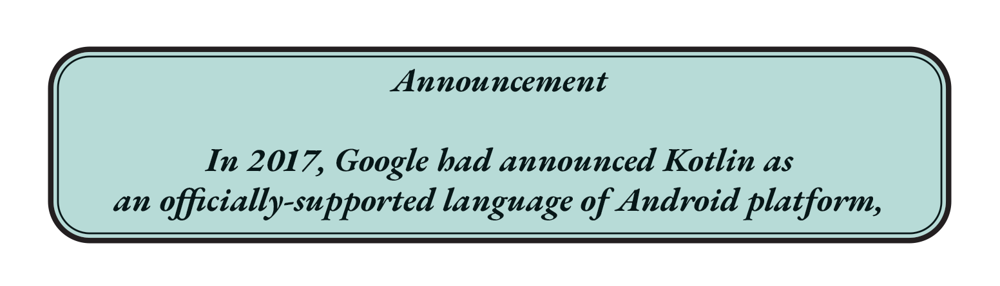
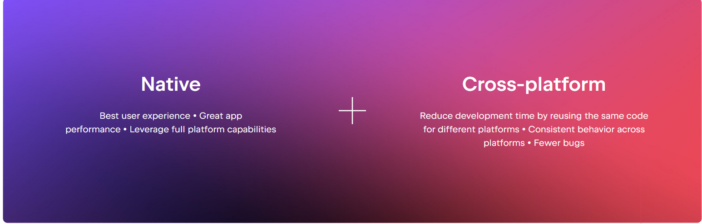

Dashboard
Welcome to the dashboard!
CHAPTER
One
Why Kotlin is useful?
Kotlin is a modern, but already mature, open-source, statically typed programming language designed to make developers happier. It’s designed to be concise, safe, and interoperable with Java. Kotlin definitions refer to the way Kotlin code is structured, including the syntax and conventions used to declare variables, functions, classes, and other language constructs.
The name is derived from Kotlin Island, a Russian island in the Gulf of Finland, near St. Petersburg. Andrey Breslav, Kotlin’s former lead designer, mentioned that the team decided to name it after an island, just like the programming language Java was named after the Indonesian island of Java...
Kotlin is a cross-platform, statically typed, general-purpose high-level programming language with type inference. Kotlin is designed to interoperate fully with Java, and the JVM version of Kotlin’s standard library depends on the Java Class Library, but type inference allows its syntax to be more concise. Conceived in late 2010, it was first released in February, 2016, and has since steadily become increasingly popular and promising a tool in many development areas, be it an: Android development, desktop applications, iOS, Linux or server-side solutions. The company which stands behind the language and has been investing into its development ever since is JetBrains, famous for its excellent software engineering tools, such as IntelliJ IDEA.
Kotlin Multiplatform
Kotlin is a multiplatform and multiparadigm programming language emphasizing safety, conciseness and interoperability.
Share code on your terms
Reuse Kotlin code across Android, iOS, web, desktop, and server-side while keeping native code if needed. Open-source technology by JetBrains for flexible multiplatform development
Kotlin Multiplatform is a technology that allows you to create applications for various platforms and efficiently reuse code across them while retaining the benefits of native programming. Your multiplatform applications will work on different operating systems, such as iOS, Android, macOS, Windows, Linux, and others.

Share code without compromising quality
Shared Kotlin code compiles into platform binaries, integrating seamlessly into any project. Along with language features that allow you to utilize platform-specific APIs, there’s no longer a need to decide between native and cross-platform development. You can have the best of both worlds at the same time!

Suitable for all kinds of projects
Share a piece of logic
Improve your app’s stability by sharing an isolated and critical part of the app. Reuse the Kotlin code you already have to keep the applications in sync.
Share logic and keep the UI native
Use Kotlin Multiplatform when you start a new project, and implement data handling and business logic just once. Keep the UI native to meet the most stringent requirements.
Share up to 100% of the code
Elevate development efficiency and share up to 100% of your code with Compose Multiplatform – a modern declarative framework by JetBrains for sharing UI across multiple platforms.
Jetpack Compose
Content about Jetpack Compose goes here...
Data Structures & Algorithms
Content about Data Structures & Algorithms goes here...
Ktor
Content about Ktor goes here...
Front-end
Content about Front-end goes here...
Back-end
Content about Back-end goes here...
Design
Content about Design goes here...